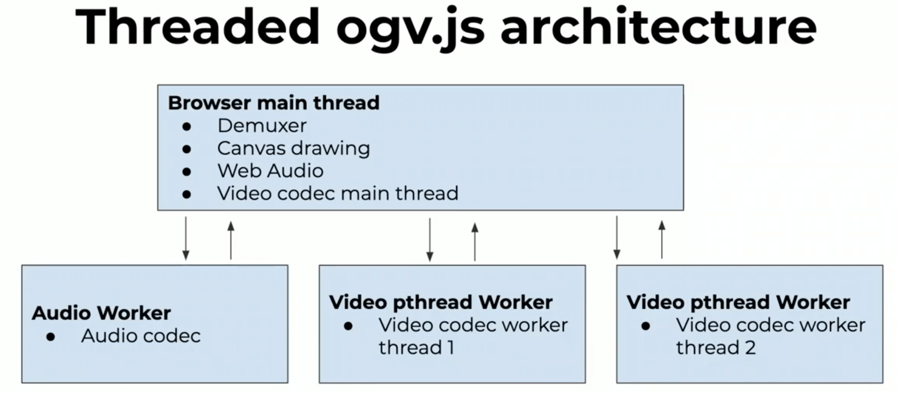

WebAssembly Summit 2020 — 议题深度解析（下）
在上一篇文章中，我们介绍了 WebAssembly Summit 各位嘉宾在上半场带来的 Wasm 在标准制定、编译优化以及浏览器引擎上的一些精彩分享。本文我们将继续回顾在大会下半场中，分享者为我们带来的，Wasm 在现阶段各类工程领域中的一些精彩实践。
物联网
Johnathan 为我们带来了 Wasm 与物联网设备相关的实践分享。物联网，即 “Internet of Thing”，我们一般简称为 IoT。是指相对于传统的手机、笔记本电脑等大型设备来说的，其可使用资源被有所限制（比如单核的 CPU、仅有几百 KB 的内存和硬盘容量、有限的网络上传速度以及甚至只需纽扣电池进行供电等）的小型嵌入式设备。因此相较于为传统普通计算机等大型设备开发软件而言，为嵌入式设备开发软件则需要特殊的编程实践方法以应对有限的软硬件资源。
在 IoT 刚刚走入人们视野的最初几年，我们一般只能通过诸如 C / C++ 甚至是汇编语言来为这些物联网嵌入式设备编写软件程序。但随着后来互联网技术的不断发展，以及从易用性、流行程度、生态系统等其他多方面的考虑，诸如 JavaScript、Lua 以及 Python 等高抽象层次的语言也被逐渐应用在嵌入式设备上，“性能”可能不再成为人们选择嵌入式设备编程语言时所需要考虑的第一要素。但现实情况是，并不是所有的嵌入式设备都可以满足这些高抽象层次语言虚拟机在其上流畅运行的要求。并且在考虑功耗以及应用环境等情况时，它们的性能和易用性便开始捉襟见肘。而此时，Wasm 字节码的高密度、高性能以及高可移植性使得我们有了可尝试的新选择。如下图所示，通过将 Wasm 字节码作为多种编程语言的中间媒介，嵌入式设备使用 Wasm 虚拟机来执行字节码，进而完成对应高级编程语言所指定的任务。通过这种方式，我们既可以利用 Wasm 的高执行效率，又不会失去可以使用高级语言的灵活性。
使用 Wasm 格式作为 IoT 设备上多种编程语言的中间媒介
运行时环境
为了能够在嵌入式 IoT 设备上高效地执行 Wasm 字节码，英特尔曾为类似的场景设计开发过一款专门的运行时环境，名为 “WebAssembly Micro Runtime”，简称 “WAMR”。WAMR 支持 Wasm 字节码的 AOT 和 JIT 执行，速度最快可以接近 Native；支持 X84-64、X86-32 以及 ARM 等多种平台；更小的运行时体积和内存消耗，等等。WAMR 为嵌入式设备提供了一个专门用来部署 Wasm 应用的框架环境，在这个环境中，WAMR 会统一管理所有其内部的 Wasm 应用，并提供可用的系统接口和资源。WAMR 会通过嵌入式设备上各类传感器（计数器、传感器、图形控制器等）的一系列事件来驱动和响应对应的 Wasm 应用。不仅如此，WAMR 的应用程序管理器还支持通过任何物理通信（TCP、UPD 等）来从主机环境或云进行应用的远程管理。
当然除了 WAMR，我们还可以使用 Wasm3 来作为其代替。Wasm3 是一个使用 C 编写的、支持 JIT 的 Wasm 运行时环境。Wasm3 使用了特殊的优化手段来降低在解析字节码时的性能损耗，使用了贴近硬件的寄存器模型来容纳各虚拟指令对应方法的参数列表，并且通过尾递归来降低分支预测时的调用损耗，而这通常是一个解释器性能好坏的决定性所在。
Microkernel / Unikernel
另一个比较有意思的东西是曾在 IoT 或者说嵌入式领域比较火热的概念 — “微内核”。如下图所示，在左侧传统的操作系统内核架构中，有着各种各样用来支持各类功能的底层驱动、框架、接口以及代码库。但实际上对于具有某一特定功能的嵌入式设备来说，其中的大部分内核底层功能都是没有存在的必要，但却仍然占用着硬件资源的。因此是否可以只把整个硬件所需要使用的那部分底层功能单独提取出来，使其成为一个面向某一类特定功能或应用的专有内核？而这就是“微内核”的概念。
 微内核架构
微内核架构
相较于传统操作系统内核，微内核有着许多的优势，比如：更快的启动速度、更小的 ROM 体积，以及更高的硬件资源使用率。而 Unikraft 便是这样一款可以用来制作微内核的系统工具。关于 Unikraft 的更多信息这里我们不展开介绍，但现在我们知道的是，“微内核 + Wasm” 确实可以为嵌入式设备带来拥有更高性能的任务执行环境。除此之外，Wasm 也让嵌入式设备的各种通常由 C / C++ 实现的通讯协议的移植过程变得更加简单。
云
Kevin 为我们带来了 Wasm 与云技术相结合的一些实践。借助于 WASI 赋予 Wasm 的能力，我们可以在 Web 平台之外来使用 Wasm，并同时体会 Wasm 从其高性能运行时、沙盒安全性、高密度字节码、多语言支持以及高可移植性等方面对云技术带来的影响。
waPC
“waPC” 全称为 “WebAssembly Procedure Calls”，同 RPC 协议类似，通过它我们可以在任意的运行时和 Wasm 模块之间进行双向的方法过程调用。由于现阶段 Wasm 标准的限制，在诸如 Wasmtime、Wasm3 等底层 Wasm 运行时中，运行时在调用 Wasm 模块中导出的方法时只能够互相传递最基本的数值（整型、浮点型）类型数据，而 waPC 作为一种协议便旨在解决此类问题。waPC 希望能够获得同 gRPC 一样的灵活性，使得在运行时宿主和 Wasm 模块之间的双向通信不再需要与具体的平台耦合。而只要双方都遵循该协议所规定的通信规范，便可以双向地传递任意的有效载荷数据，比如“字符串”。并以同样的方式从响应中获得返回的有效载荷。
wascap
“wascap” 是一个针对 Wasm 模块的子组件。设想我们需要将每一个独立的 Wasm 模块作为具有独立数据处理能力、可以提供独立功能的一个云服务，而通过 wascap，我们便可以为任意的 Wasm 模块添加、提取以及验证对应的元数据描述清单。这里所谓的“元数据描述清单”是指通过 JWT 的形式被嵌入在模块自定义段结构（Custom Sections）中的一段数据，这段数据描述了该模块在作为云服务运行时所能够使用的功能 / 服务、模块的版本、模块过期日期以及与安全策略相关的各类公钥信息等。如下图所示，在这个示例模块的描述清单中我们可以看到，该模块永远不会过期、其当前版本号为 “v1.0.0(1)”，所能够使用的云服务有 “K/V Store 键值存储服务”、“Messaging 消息服务”以及 “HTTP 服务”等。
Wasm 模块元数据描述清单
waSCC
“waSCC” 的全称为 “WebAssembly Secure Capabilities Connector”，顾名思义，通过 waSCC 我们可以将上述介绍的两个概念连接（Connect）起来。waSCC 基于 waPC 构建，内部使用 Wasmtime 来作为 Wasm 模块的底层运行时环境。当我们将一个 Wasm 模块部署在 waSCC 上时，waSCC 会启动独立的进程为该 Wasm 模块提供服务，同时它会根据 wascap 对模块内部 JWT 元数据描述清单的解析结果，来为模块提供相应的外部能力，比如常见的诸如 “wascc:http_server” 对应的 HTTP 服务与 “wascc:keyvalue” 对应的键值存储服务等。这里 waSCC 会使用命名空间 “wascc” 前缀来区分模块可以使用的外部能力是否是由 waSCC 本身提供的。那除了这些“原生”能力以外，waSCC 还可以为 Wasm 模块提供由 “.so” 原生共享库（通过 C-FFI 调用）提供的能力，以及其他被部署在 waSCC 上的 Wasm 模块提供的，基于 WASI 构建出的能力。
回过头来看，传统我们在构建大规模云服务时，通常会使用容器技术来隔离各个功能提供商（Provider）的运行时环境以进行资源的隔离与功能的动态替换。但此时，借助于 Wasm 本身的沙盒特性，使得每一个被部署在 waSCC 上的 Wasm 模块都只能够使用自己有限的资源，并在有限的上下文中运行。而这相对于传统的容器技术来说，无疑大幅降低了部署云服务的成本，且功能模块更加轻量并易于管理。提到最近一段时间正在被各大互联网公司调研的 Wasm 与 FaaS 相结合的尝试，不知道会不会引起你更多的思考？
多媒体
Brion 是维基媒体基金会（Wikimedia Foundation）的一名软件架构师，他为我们带来了维基百科网站为支持“视频播放能力”所历经的一系列探索与实践。在网站建设的初期，维基百科曾经历了从使用 GIF 图片、Java Applet、浏览器插件再到 Flash 的一系列变革。而直到 Emscripten 的出现，才为“多浏览器兼容的高效视频播放”这一需求提供了转机，ogv.js 便诞生于此。
ogv.js 是一个可以在浏览器中使用的多媒体播放器。如下图所示为其整体的设计架构，其中 Demuxer 作为核心组件主要用于解码并提取各类型媒体文件中的音视频内容，因此，这部分计算逻辑较多的工作便交由 Wasm 来进行加速。不仅如此，ogv.js 还可以同时利用浏览器支持的“多核心（Multi Cores）Worker”特性来对整个解码过程进行加速。与此同时，随着 Wasm 最新的 SIMD 标准被越来越多的浏览器实现，ogv.js 在处理视频像素矩阵以及各类相关编解码工作时，还可以利用该特性来进一步加速。而不得不提到的是，2019 年 Wasm 的一个最重要的实践应用领域便是音视频处理领域。
ogv.js 设计架构
电子音乐
除了上述我们介绍的，Wasm 在几个比较值得关注的工程领域内的实践外，Peter 还为我们带来了他使用 Wasm 技术在实时音乐创作上的一些尝试。基于 AssemblyScript（下文简称 AS）编写的合成器（Synthesizer）可以被直接转换成对应的 Wasm 格式，并在浏览器中运行。而借助 Wasm 格式在浏览器中相较 JavaScript 更高的执行效率，因此可以为在线的实时音乐创作提供一个低延迟、高帧率的解析与播放环境。
通常来说，合成器主要用来产生具有不同音色的声音，然后再配合音序器（Sequencer）来根据特定的“曲谱”生成带有不同节奏、速度以及力度的音乐片段。这其中，合成器的发声主要依靠对各种常见震荡波形（比如正弦波、锯齿波以及方波等）进行叠加和处理，然后再经过放大器放大输出，那这里大部分平台相关的工作主要依赖于对应的 Web Audio API 来实现。因此，“对各类波形进行数字化处理”这个过程便是整个合成器的最主要工作。所以，如果我们能够将这部分纯计算逻辑的任务交给 Wasm 来处理，那么整个合成器的性能便会得到极大的提升。
 基于 Wasm 加速的在线音乐创作器
基于 Wasm 加速的在线音乐创作器
不仅如此，一个有趣的地方是，我们还可以将创作好的音乐片段下载成以 “.wasm” 为后缀结尾的标准 Wasm 模块文件。该模块在被虚拟机执行时将会导出对应到 RAW 格式的标准二进制数据。此时我们便可以配合诸如 SoX 等音频处理程序来对这些数据进行处理，比如以音频的形式直接播放出来，或者转换成其他标准格式的音频文件。
AS 作为一个 TypeScript（下文简称 TS）到 WebAssembly 编译器，它给想要快速体验 Wasm 的前端开发同学提供了一个可以快速上手的途径。与 TS 类似，为了直接对应到 Wasm 标准中的数据类型，使用 AS 开发时需要将传统 TS 中诸如 “number” 等类型注释替换为 “i32”、“u64” 等更为具体的子类型。但与此同时，由于 JavaScript 语言本身的一些特性以及现阶段 Wasm MVP 标准上的限制，使得 AS 在处理 TS 中诸如：闭包、异常处理以及 OOP 等相关代码时的能力还不完善，因此这部分代码可能无法被正常编译到对应的 Wasm 字节码中。但总体而言，AS 作为贯穿整个大会出现了多次的重要角色，在现阶段作为生态中主要的编译工具之一，还是值得我们去尝试的。
发展和现状
Ben 作为 WebAssembly Working Group 的主席，带领我们回顾了 Wasm 从其出生，到 MVP 标准被四大浏览器实现，再到 WASI 的出现，以及 Post-MVP 标准不断制定的这五年时间里 Wasm 在各个重要节点发生的变化。Wasm 项目启动于 2015 年 5 月，当时对应的 WAT 规范被称为 “ml-proto”，对应的字节码规范则被称为 “v8-native-prototype”。Ben 作为 Google 员工便接下了编写从 ml-proto 可读文本到 v8-native-prototype 字节码转换工具的任务，这个工具在当时被称为 “sexpr-wasm”，即现在的 WABT。而该工具的第一个版本，便是由 Ben 在当时花了两周时间完成的。从下图可以看到 Ben 在当时编写 sexpr-wasm 时，在各个功能组件阶段所花费的时间，以及对应每天提交的 Commit 数量。
sexpr-wasm 初期开发进度
“APIE” 是由四个单词 “Ability”、“Producer”、“Interop” 以及 “Embedder” 组成，这四个单词分别从四个不同的角度分别描述了 Wasm 的发展程度，即：Wasm 能够做什么（能力）、谁可以生成 Wasm（生产者）？Wasm 可以和谁进行互操作（交互）？谁可以使用 Wasm（平台）？2017 年，Wasm 取得了四大浏览器 Chrome、Edge、Firefox 以及 Webkit 对其 MVP 标准的一致性支持。这一年 Wasm 标准开始加入 GC 与 Host Binding 提案以增强其与平台之间的互操作性；2018 年，Wasm 生态加入了 Reference Types 和 Wasm C API 提案，开始将 GC 这个棘手的难题分解成若干相关的子提案以快速推进 Wasm 的发展。而 Wasm C API 的出现则为各类平台方便使用 Wasm 提供了帮助；2019 年，这一年的 Wasm 生态又加入了很多新的成员，WASI 的出现又进一步提高了 Wasm 与平台之间的互操作性，使得其 out-of-web 成为可能；而 Type Function Reference 与 Type Imports 提案的出现也进一步推动了 GC 的最终实现。
截至 2019 年 8 月所有开放的 Wasm 提案
后记
自笔者 2017 年接触 Wasm 至今，其发展速度着实超过了任何一个其他类似的 W3C 标准化组织。从 MVP 标准的落地，到 WWG 的成立，再到全球第一次 WebAssembly Summit 的成功举办，仿佛又映射了 Atwood 的那句名言：“任何可以使用 JavaScript 来编写的应用，最终都会由 JavaScript 编写”，只不过这次的主角变成了 Wasm。当然我们都知道这只是这只是一句玩笑话，但也确实从侧面反映出来 JavaScript 如日中天的这样一个时代。经过了将近五年的发展，Wasm 逐渐在国外技术社区掀起新一轮的技术浪潮，随之而来的是众多的虚拟机、编译器以及各类配套的底层工具链如雨后春笋般涌现。而通过这次的 Summit 我们发现，Wasm 已经逐渐开始在应用层面显示出它的能力，并逐渐开始向云技术、物联网以及区块链等多个重要领域发起“进攻”。最后，让我们一同拭目以待，期待未来的 Wasm 能够引领新一轮的互联网技术变革。也同时祝愿我们能够在 2020 年成功为大家带来中国的 WebAssembly Summit China 峰会，期待与你届时的相遇。